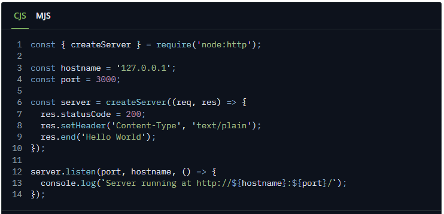

- HOME
- HTML
- CSS
- JAVASCRIPT
- Express JS
- SQL
Introduction to Node.js
Node.js is an open-source and cross-platform JavaScript runtime environment. It is a popular tool for almost any
kind of project!
Node.js runs the V8 JavaScript engine, the core of Google Chrome, outside of the browser. This allows Node.js to
be very performant.
A Node.js app runs in a single process, without creating a new thread for every request. Node.js provides a set
of asynchronous I/O primitives in its standard library that prevent JavaScript code from blocking and generally,
libraries in Node.js are written using non-blocking paradigms, making blocking behavior the exception rather
than the norm.
When Node.js performs an I/O operation, like reading from the network, accessing a database or the filesystem, instead of blocking the thread and wasting CPU cycles waiting, Node.js will resume the operations when the response comes back.
This allows Node.js to handle thousands of concurrent connections with a single server without introducing the burden of managing thread concurrency, which could be a significant source of bugs.
Node.js has a unique advantage because millions of frontend developers that write JavaScript for the browser are now able to write the server-side code in addition to the client-side code without the need to learn a completely different language.
In Node.js the new ECMAScript standards can be used without problems, as you don't have to wait for all your users to update their browsers - you are in charge of deciding which ECMAScript version to use by changing the Node.js version, and you can also enable specific experimental features by running Node.js with flags.
An Example Node.js Application
The most common example Hello World of Node.js is a web server:
